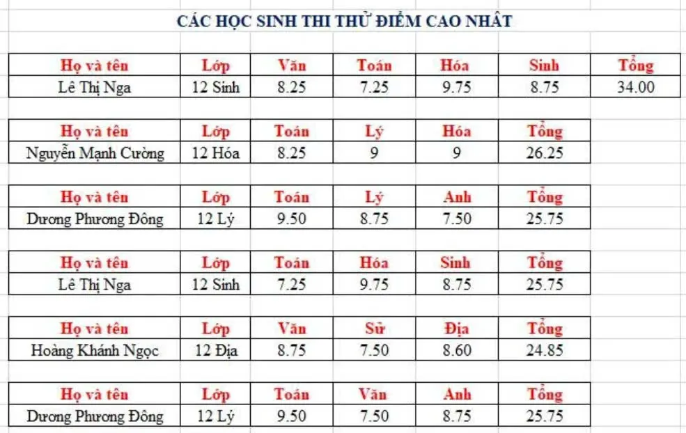
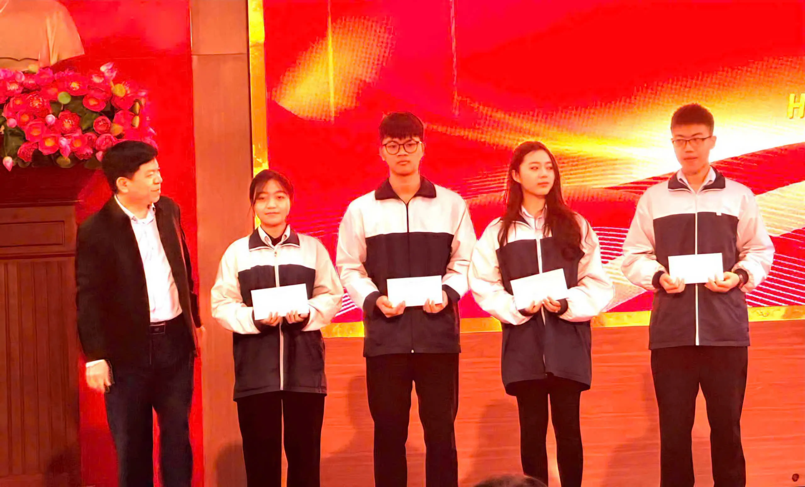
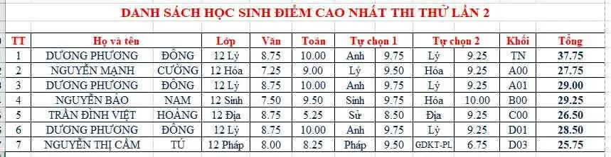
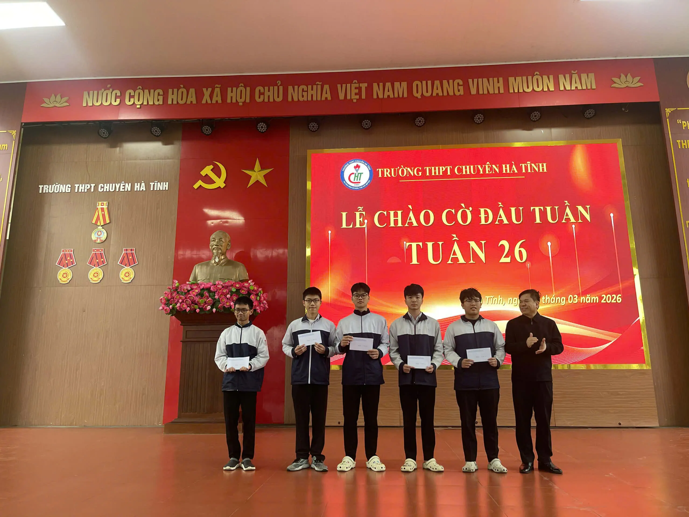

Những ngày tháng cuối cấp luôn là một cuốn phim quay chậm ngập tràn áp lực. Tiếng lật giấy sột soạt, những đêm thức trắng bên ánh đèn bàn, và cả những câu hỏi tự vấn bản thân: "Liệu mình đã đủ cố gắng chưa?". Nhưng trước khi chạm tay vào quả ngọt của hai đợt Thủ khoa liên tiếp, tôi đã từng phải đi qua một nốt trầm cay đắng — nơi một gáo nước lạnh dội thẳng vào lòng tự tôn, ép tôi phải lựa chọn: Buông xuôi hay Đứng lên chiến đấu?
Vết Gợn Tuổi 18: Khi Chuỗi Thành Tích Bị Đứt Gãy
Từ năm lớp 9 đến lớp 11, tôi luôn tự hào với chuỗi thành tích đạt giải Nhì môn Vật Lý trong kỳ thi Học sinh giỏi (HSG) cấp Tỉnh. Bước sang lớp 12, tôi dồn toàn bộ tâm huyết, đặt cược tất cả niềm kiêu hãnh với mục tiêu duy nhất: Phải bứt phá lên giải Nhất.
Nhưng đời không như là mơ. Ngày công bố kết quả thi HSG Tỉnh năm đó, tôi chết lặng trước màn hình máy tính. **Giải Ba.** Tấm giải Ba nguội lạnh hiện lên như một cái tát thẳng vào mọi sự kỳ vọng. Chuỗi danh hiệu giải Nhì bền vững suốt nhiều năm bỗng chốc đứt gãy; giấc mơ giải Nhất hoàn toàn vỡ vụn. Cảm giác hụt hẫng, hoang mang và hoài nghi năng lực bản thân bao trùm lấy những đêm dài sau đó. Tôi đã ngã, ngã đau ngay trước ngưỡng cửa quan trọng nhất của cuộc đời.
Nhìn lại, đó chính là khoảnh khắc định hình nên tôi của ngày hôm nay. Tôi nhận ra mình không được phép chìm đắm trong thất vọng. Nếu kỳ thi HSG đã khép lại, thì kỳ thi Tốt nghiệp THPT Quốc gia chính là chiến trường cuối cùng để tôi lấy lại những gì đã mất. Ngọn lửa kiêu hãnh trong tôi không tắt đi, nó chỉ đang nén lại để chuẩn bị cho một cú bùng nổ dữ dội hơn!
Đợt 1: Cú Hích Bất Ngờ Và Vị Trí Kép Đỉnh Cao
Mang theo sự sục sôi và quyết tâm làm lại từ đầu, tôi bước vào đợt thi thử đầu tiên của toàn trường. Tôi siết chặt tư duy phòng thi, chắt chiu từng điểm số như để trút hết mọi dồn nén từ thất bại trước đó. Và khi bảng điểm được công bố, cả trường như chấn động.
Không chỉ đứng đầu, tôi vinh dự trở thành Thủ khoa song song cả hai khối A01 (Toán - Vật Lý - Tiếng Anh) và D01 (Toán - Ngữ Văn - Tiếng Anh). Cảm giác bước lên bục danh dự, nhận cái bắt tay chúc mừng từ thầy cô và những tràng pháo tay của bạn bè xung quanh là một luồng điện chạy dọc sống lưng — phấn khởi, tự hào và vô cùng xúc động. Tôi đã chứng minh được: Cú vấp ngã trước đó chỉ làm tôi mạnh mẽ hơn.


Đợt 2: Áp Lực Sân Nhà Và Lời Khẳng Định Vững Chãi
Người ta thường nói: "Chạm tay vào vinh quang đã khó, giữ được vinh quang đó lại càng khó hơn". Sau đợt 1, mọi ánh mắt kỳ vọng của thầy cô bỗng chốc trở thành một áp lực vô hình đè nặng lên vai tôi ở đợt thi thứ 2. Những tiếng xì xào hoài nghi xuất hiện: "Liệu đợt 1 chỉ là may mắn ăn may?", "Liệu áp lực thủ khoa có làm nó hụt hơi?".
Cách duy nhất để đập tan mọi hoài nghi là tiếp tục chiến thắng. Tôi siết chặt kỷ luật, tối ưu hóa lại thời gian biểu và bước vào phòng thi đợt 2 với một tinh thần tập trung cao độ.
Và rồi... Lightning strikes twice!
Khi kết quả đợt 2 hạ cánh, niềm vui sướng trong tôi như vỡ òa gấp bội. Tôi tiếp tục bảo vệ thành công ngôi vị Thủ khoa khối A01 và D01. Tuyệt vời hơn thế, tôi đã bứt phá để đạt tổng điểm 4 môn (Toán - Ngữ Văn - Vật Lý - Tiếng Anh) cao nhất toàn trường. Đây không còn là sự may mắn nhất thời, mà là lời khẳng định đanh thép cho một lộ trình học tập đúng đắn và một tinh thần thép không biết lùi bước.


Lời Kết & Những Điều Rút Ra
Nhìn lại hành trình "Back-to-Back" đầy cảm xúc này, tôi nhận ra rằng thủ khoa không phải là một danh hiệu sinh ra dành cho những thiên tài kiệt xuất chưa từng thất bại. Đó là kết quả của việc dám đứng lên từ những vấp ngã, biết cách biến nỗi đau thành hành động, phân bổ năng lượng thông minh và giữ cho mình một cái đầu lạnh trước mọi áp lực.
💬 Để lại bình luận hoặc cảm nhận
Ý kiến của bạn là nguồn động lực rất lớn để tôi viết tiếp những bài blog chất lượng hơn!
Cộng đồng thảo luận (0)